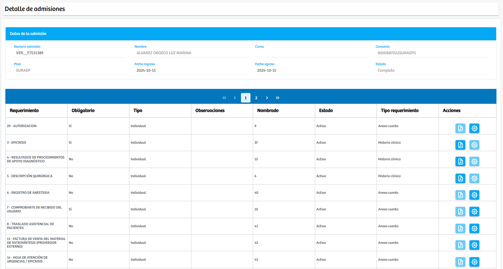
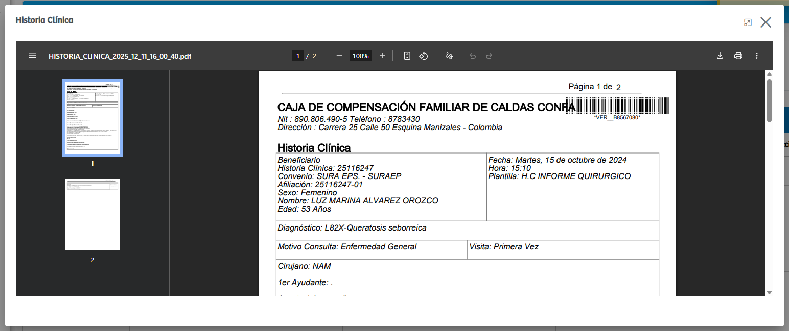

Modulos Sas-Web
Funcionalidades
Consultar Admisiones
El módulo Consultar Admisiones permite visualizar y gestionar de manera centralizada todas las admisiones registradas en el sistema. La interfaz se divide en tres apartados principales: Admisiones abiertas, Admisiones cerradas y Admisiones en facturación, lo que facilita la consulta según el estado en que se encuentre cada caso. En cada sección se listan las admisiones con información relevante como número de admisión, nombre del paciente, cama asignada, convenio, plan, fechas de ingreso y egreso, y estado general.

Cada registro cuenta con un botón en la columna Acciones, que dirige a la vista detallada de la admisión seleccionada. En esta nueva vista se presentan los datos básicos del paciente, tales como número de admisión, nombre, convenio, plan y fechas asociadas; y, adicionalmente, se despliega el listado de requerimientos o reportes exigidos de acuerdo con el plan al que pertenece el usuario.
Dentro de cada requerimiento se muestran dos botones de acción. El primero corresponde a la visualización del soporte en formato PDF, que al ser presionado abre un modal donde se despliega el documento específico para consulta. El segundo botón permite gestionar los requerimientos, abriendo un modal adicional en el que se ofrece la posibilidad de cargar los archivos necesarios para cumplir con los soportes exigidos. En este espacio el usuario puede seleccionar archivos, agregar nuevos soportes y visualizar aquellos ya cargados previamente.

Este módulo constituye una herramienta fundamental para el seguimiento integral de los procesos administrativos y clínicos asociados a cada admisión, garantizando que la información requerida esté disponible, organizada y lista para los procesos posteriores.